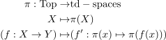
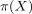
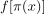
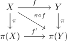
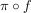
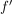

functor from Top to the category of totally disconnected space
1. Proposition
Given category Top, there exists a covariant functor to the category of totally disconnected spaces

where

is equipped with the quotient topology2. Proof
2.1. welldefined
follows from image of a connected set connected, as

is a subset of a unique connected component2.2. continuous
By construction, we get a commutative diagram

where

is continuous as composition of continuous maps and
by universal property of a quotient topology2.3. identity and composition
- follows immediate